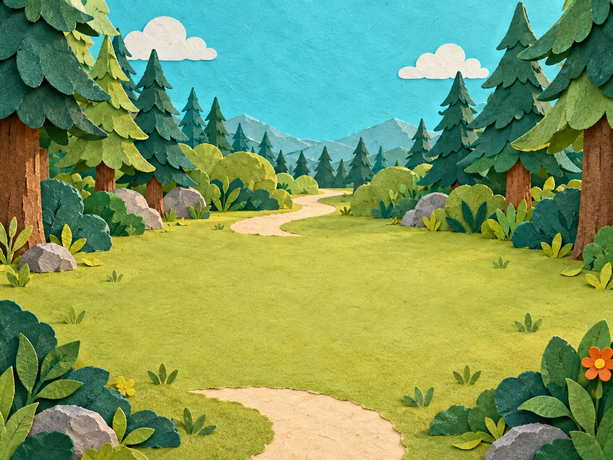
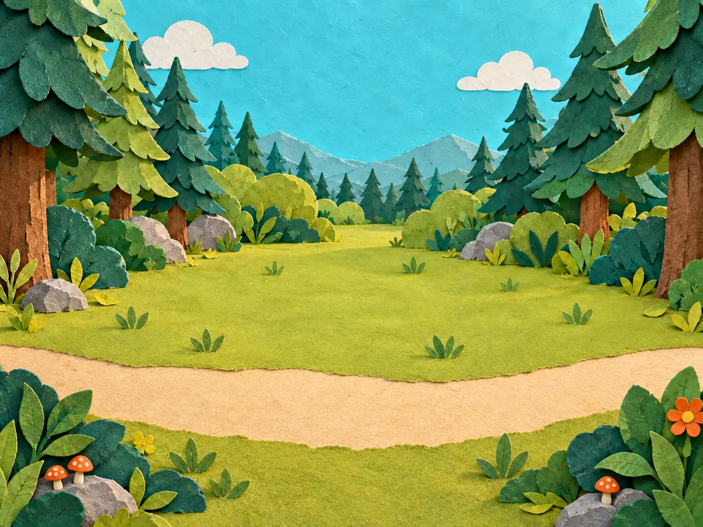
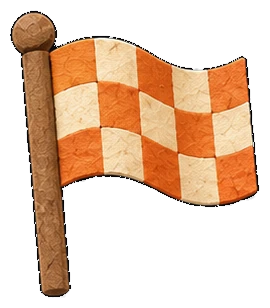
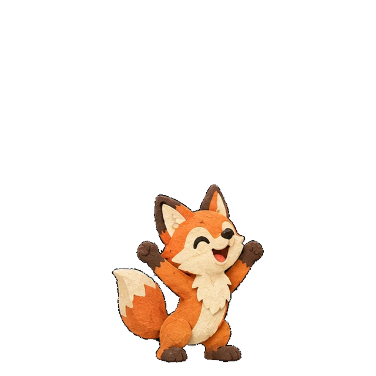

Trail Counting Walk
Pick a counting trail

Count each step


You counted the whole trail!
Every step earned a trail star.

Pick a counting trail

Count each step


Every step earned a trail star.